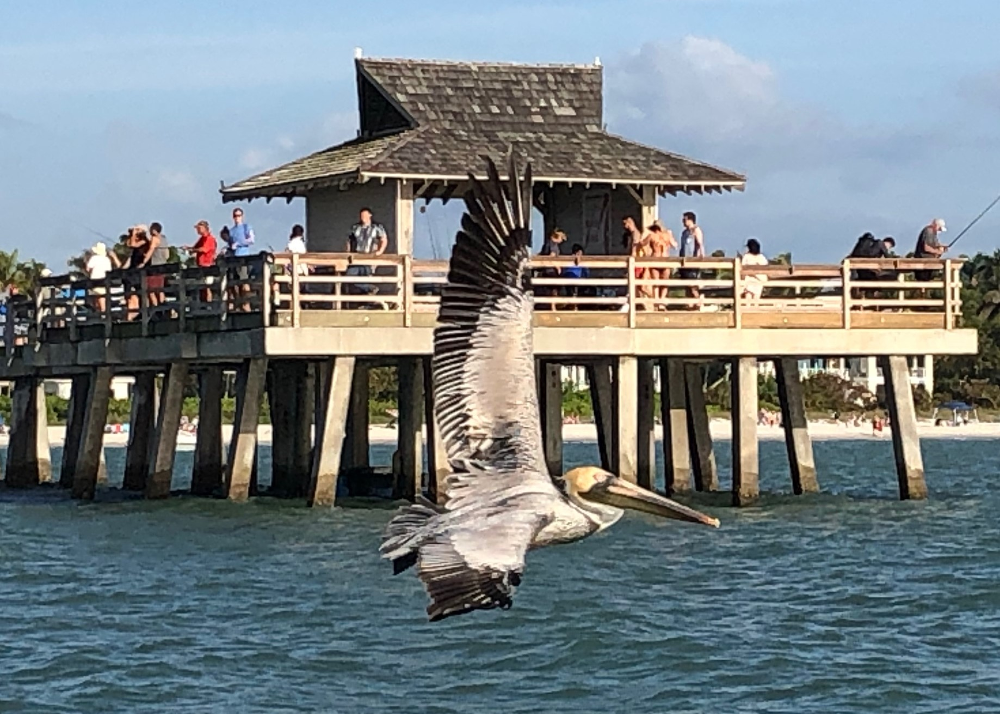

I had begun a topic file here 3.28.25, but it went away when the computer did an update. Ok. Starting over 3.29.25.
Where is the Style Sheet editor? Ok. Click Styles above and Style window opens; drop-down menu, click the style desired. I see the spacing is inconsistent among these lines. I do not know why. I have a local style attribute here of an indent that I'll try to change to a style indent. Font here 12 pt. in regular paragraphs.Under Content Explorer--Content--Resources, click Stylesheets--Styles.css.
You can choose different styles for:
paragraphs
headings
lists
tables
etc.
Z: "Delete this text and replace it with your own content."
BOLD: We are all -- everyone in the class -- using the same "project" that Zoe already set up -- oh!.
Define "Project" in Flare. A Project contains lots of Files, chapters, etc..
Zoe: "I set up a starter topic and a folder for each of you."
Bare Minimum
Edit the topic I made for you, add the following:
• Some paragraphs DONE
• Some inline formatting DONE
Here is BOLD.
Here is italics.
Here is underline.
• An ordered list above a through e. DONE
• An unordered list here below: DONE
This is the first bullet choice.
The next will be the second bullet choice, the open circle:
There it is. And the next bullet will be the third choice, the square bullet.
This is the third and final bullet choice, the solid square.
• An ImageDONE
An outside image DONE!

| Name of | ||
|---|---|---|
| Homework | Submitted? | Comments |
| Week 1, GitHub | Yes | Confusing |
| Wk2, Properties | Yes | Ok |
| Week 3, Word | Yes | Learned new things! |
| Week 4, Tours | Yes | Interesting |
| Wk 5, AgileHTML | Yes | Interesting |
| Week 6,Markdwn | Not yet | Interesting |
| Week 7,ReST | Not yet | Interesting |
| Wk 8-9,FrameM | Yes | I like this. |
| Wk 10, MCFlare | Doing now | Really like this! |
| Wk 11-12, DITA | future | |
| Wk 13,Diagram | future | |
| Wk14, VidScript | future |
A link. Ok, I see across top, File--Home--Insert: has Hyperlink, let's try Link to File in Project: GitAndFlare.htm
and website: roffoprofessionalwriting.com
Cross-Reference to first line:
Experiment: DONE! I will probably do the PowerPoint on MadCapFlare. Really cool tool!
Z: "Write some topic-based content in your area.
You can add as many topics and images as you would like to your folder." I added my favorite image.
You will have to update the SharedContent TOC file. This is found under Project Organizer, not Content Explorer. End of Z's notes to class. That was tricky; it took me about 5x to re-read the instructions, but I think I finally got it...
AWWW!! Build failed:
Access to the path 'C:\Users\rroff\OneDrive\Documents\GitHub\mcc_tools_tech\Week10\PortalsHelp\ClassFlareProject\Output\rroff\Temporary\HTML5\Preview\Images' is denied.
Any guidance, Zoe? Should this have worked?
*****Below are Bobbi's MISC. NOTES FOR TECH TOOLS FINAL PROJECT AS OF 3.29.25, OF FAVORITE TOOL AND LEAST FAVORITE TOOL.
MADCAP FLARE FOR FAVORITE TOOL: Do not know yet least favorite tool.
SEE MY CLASS NOTES OF 3/27 FOR about 10-12 REASONS TO LIKE MADCAP FLARE.
Formatting: Add inline formatting to a Flare topic
Since the base of Flare is HTML, you can just use the formatting tools across the top.
• For basic formats, such as bold and italic, select the text and click the appropriate formatting from the Font section of the Home ribbon.
• Additional inline elements are available from the Style list on the Home ribbon.
Much more to add...